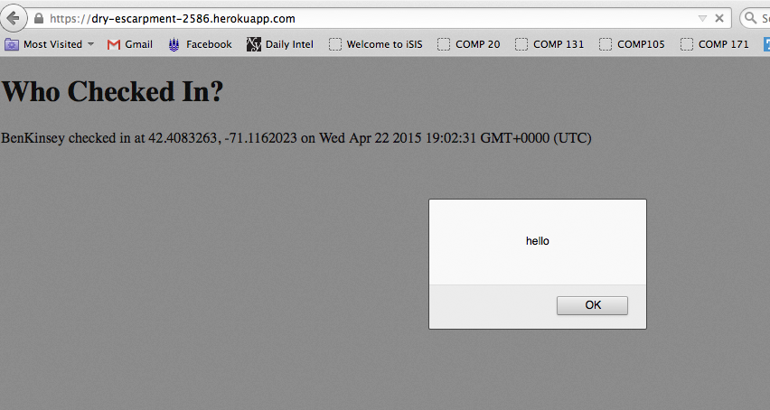

Comp20 Assignment 4
Danielle Westerman
Assessing Gabriel Terrel's Marauder's Map
Introduction
My goal is to assess the security and privacy of Gabriel Terrell’s
Marauder’s Map assignment. The Marauder’s Map takes in location data
for all of its users, storing all of their positions in a database
and displaying them on a map. Both the client-side (assignment 2)
and the server-side (assignment 3) show severe security
vulnerabilities, which allow malicious hackers to interfere with
the functionality and potentially launch attacks on users of the
application.
Methodology
In finding security flaws in the Marauder’s map, I primarily used curl
in the terminal to manipulate posting data to the server.
Abstract of Findings
The security and privacy issues are due to the fact that, contrary to
Ming’s advice, the server trusted the user to input legal data.
Hackers and malicious users can easily violate this trust and enter
harmful input that can change the functionality of the website,
manipulate the data stored in the website, and show important
information to others who should not have access to it.
Issues Found
- Cross-Site Scripting (XSS)
- Location: This attack is launched when a user inputs
information through the HTTP POST API. However, the result of
this attack is not seen until an HTTP GET request is executed
- Severity: High- this type of vulnerability allows
hackers to inject any type of code, changing
the behavior of the website and even leaving
users vulnerable to dangerous attacks
- Description: When data is submitted through the
post API, it is received as a string of text, and the contents
of the input are later displayed on the webpage. However, if
this text contains code (such as <script>alert(‘hello’)
</script> as below), this code will be executed and thus
the site’s functionality can be completely changed or destroyed
if that is the hacker’s intent. This vulnerability was found
using curl to send data to the post API (/sendLocation), where
the ‘login’ field was filled with JavaScript code.
- Proof of Vulnerability:
Curl-ing "<script>alert(‘hello’)</script>" as
the login name to the send API:
Result:

- Resolution: Since a server cannot do anything to
control what its users submit, it must check the data for
potential XSS attacks. By 'sanitizing' the input, the server
can protect itself from code injections by changing key
characters (such as < and >) to < and > so
the input will not be recognized as executable code. This can
be performed as soon as the server receives the data, before it
is stored, so as to avoid any complications that may arise from
storing malicious code and escaping it only just before it is
sent back out.
- Extra JSON fields
- Location: This attack is launched through the HTTP POST
API.
- Severity: Low- since the GET API only deals with 'login,'
'lat,' and 'lng' fields from the input, any information entered
in extraneous fields will not be executed. However, when taken
to extreme lengths, this kind of attack can fill up the database,
severely slowing down performance and possibly costing the server
extra money.
- Description:When submitting data via the POST API,
different fields are entered using the format "key=value" and
separated by a &. A hacker can enter any data fields he or
she wants to, other than the login, lat, and lng expected by
the server. The server will only use those three inputs,
although it reads in anything and everything that a user
enters.
- Proof of Vulnerability:
- Resolution:
- No user authentication
- Location: This attack
- Severity: Medium- Anyone with internet access can
access the map with whatever name and coordinates they choose.
- Description:Because users are not required to
authenticate their identity, any internet user in any location
can access the information in the database. This is a huge
breach of privacy, although this particular privacy flaw does
not allow hackers to harm the server.
- Proof of Vulnerability:
- Resolution:
Conclusion
Overall, this web application is generally not very secure at all.
Because sensitive information (like a user's location) is available
to anyone who accesses the URL, all users' privacy is at risk.
Because the server does not escape users' input before it is added
to the database, a malicious hacker can easily hijack the
application via cross-site scripting. Many of this application's
security problems can easily be fixed by cleaning user's input,
adding extra precautions to verify a user's identity and only allow
database information to be viewed by those it is intended for.